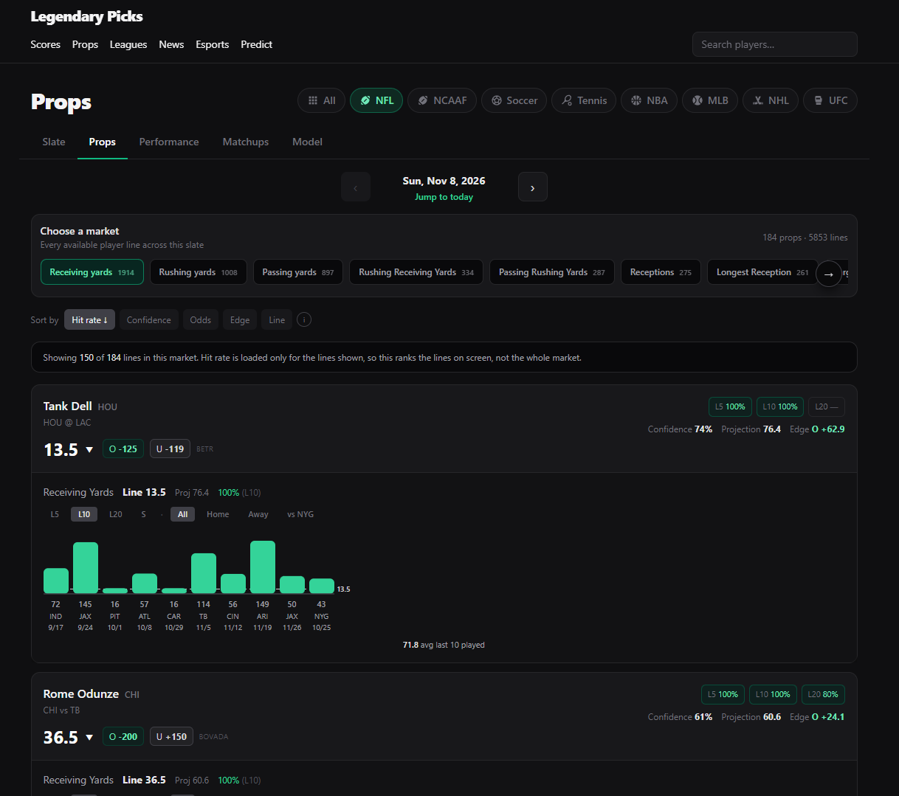

Legendary
Picks
Sports analytics, predictive modeling, and game simulation across professional and collegiate sports.

Legendary Picks is a sports intelligence platform built to help fans go beyond the box score. It brings together live scores, historical player data, betting markets, predictive models and game simulations in one place: follow games, research player props, explore statistical trends, and evaluate predictions against what actually happened.
The bigger goal is to make sports analytics interactive. Rather than simply displaying a predicted outcome, the project is building tools to explore how a game might unfold, how players are used, and how different decisions change the possible results.
A multi-league data platform that ingests, reconciles and serves schedules, scores, play-by-play, player statistics, injuries, standings and historical records.
A research interface combining sportsbook lines, historical hit rates, player projections, opponent matchups and performance trends.
Statistical models for game outcomes and player performance, evaluated against historical results and market benchmarks with probability calibration, Brier scores, log loss and CRPS. An NBA game-outcome study compares Elo, efficiency and joint score-distribution candidates across ten seasons (2017–2026), with paired date-clustered uncertainty on every comparison.
A play-by-play simulation track that models offensive play-calling, player workloads and game-state transitions, validated against real NFL play-by-play. The first public experiment is Mile High Film Room: a 22-player, 120 Hz physics reconstruction of Seahawks @ Broncos (October 2026) that lands the real ending spot within a yard on 122 of 124 checkable plays.
Turning sports data into playable experiences: a pixel-art NFL headquarters, GM-mode concepts and football minigames are prototypes in development.
Live today: prop lines with hit-rate history across 11 leagues, scores and box scores across 8+ leagues, predictions you can track over a season, league news, esports desks, and an NFL draft room with a mock draft board. Free to browse, no signup.
The platform separates data collection, storage, modeling and presentation. Scheduled Python jobs collect and reconcile league data into a canonical SQLite database; FastAPI exposes that information to a Next.js frontend. Separate research pipelines train, backtest and grade predictive models and simulations, with immutable forecast locks and append-only grade records, so a prediction can’t be quietly rewritten after the fact.
The engineering focus is consistent data identities, reproducible experiments, realistic statistical behavior, and a clear separation between observed results and model-generated predictions.
Legendary Picks began as a fantasy sports experiment built around NBA Top Shot and Flow collectibles. It later expanded into sports predictions and UFC content before evolving into an independent, data-first platform.
Today it’s moving beyond scores and predictions toward sports intelligence, simulation and interactive entertainment, with the research kept honest: benchmarks, validation criteria and model cards ship with the code rather than as endnotes.
More Projects